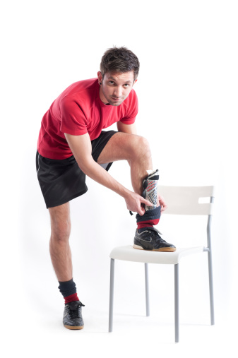
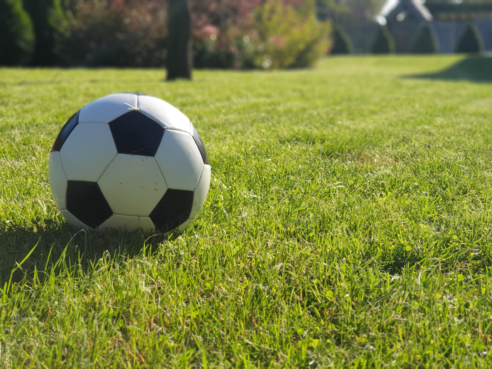
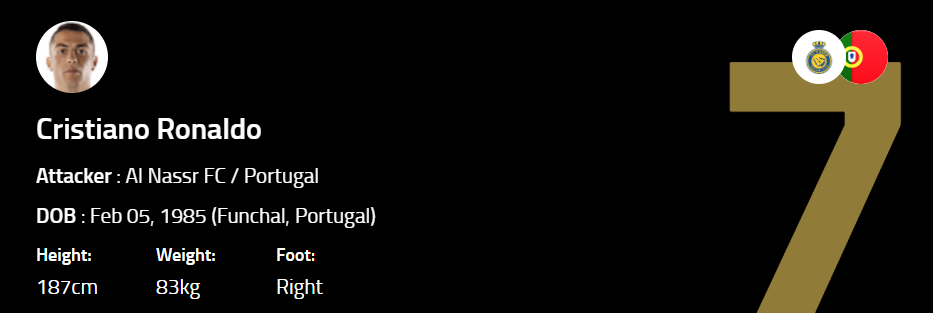
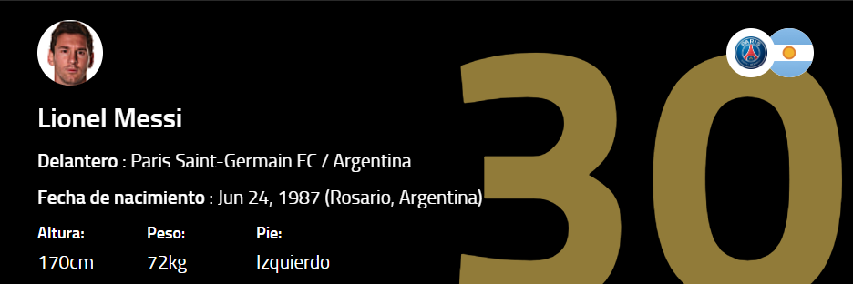
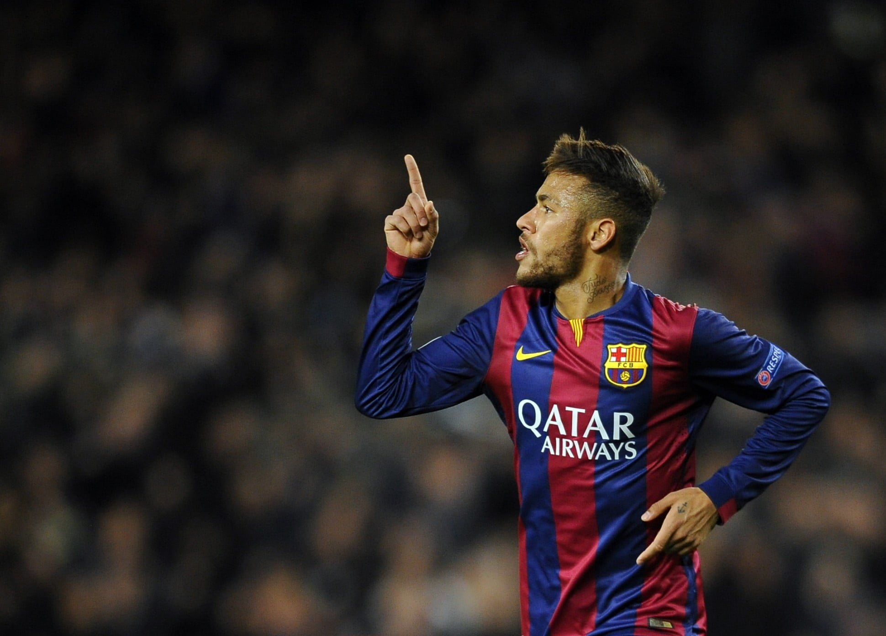
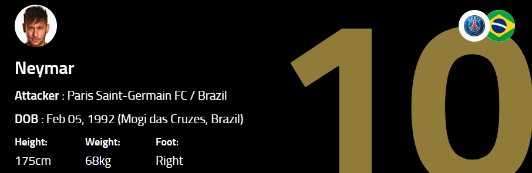
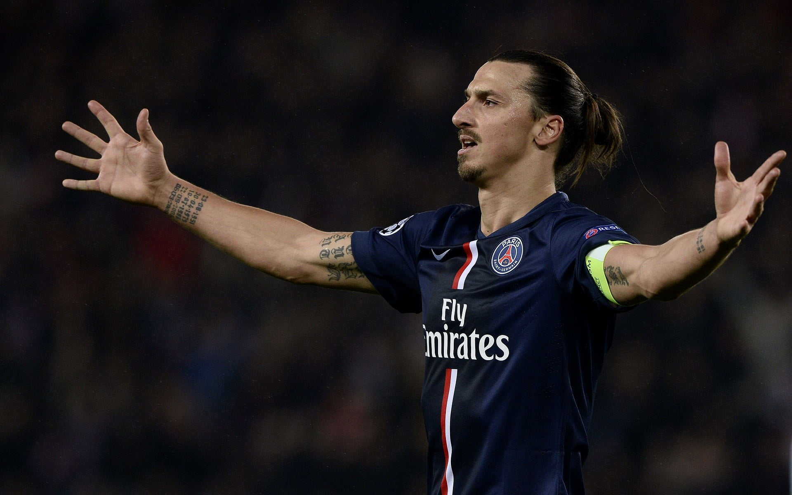
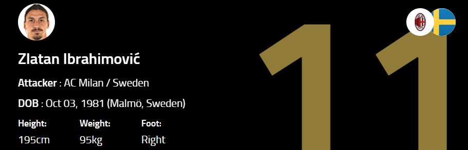

Introduction
Football, also called association football or soccer, game in which two teams of 11 players, using any part of their bodies except their hands and arms, try to maneuver the ball into the opposing team’s goal. Only the goalkeeper is permitted to handle the ball and may do so only within the penalty area surrounding the goal.It is widely considered to be the most popular sport in the world.The modern game was codified in England following the formation of the Football Association.
Football is governed internationally by International Federation of Association Football (FIFA). The most prestigious international football competition is the World Cup. The FIFA World Cup is conducted every four years, which is the most awaited championship for millions of people. Teams from all around the world participate.
Football is played in accordance with a set of rules, known as the Laws of the Game. The team that has scored more goals at the end of the game is the winner; if both teams have scored an equal number of goals, then the game is a draw.
There has been a football tournament at every Summer Olympic Games since 1900, except at the 1932 games in Los Angeles.
China being the mother of Football may raise a few eyebrows. In early days, this sport was played by kids in China which was later picked up by the senior fellows. Despite the origin in Asia, the sport was well received and adapted by people of Europe and South-American countries. Spain, Italy, Brazil, Argentina, and England are some of the best football playing countries.
Equipment
Cleats or turfs

A very important gear for every football player. These are specially designed shoes with spikes on the bottom that provide great traction on grass.
The choice of ball color is made according to the table color and its surroundings. Manufacturers often indicate the quality of the ball with a star rating system, usually from one to three, three being the highest grade. As this system is not standard across manufacturers, the only way a ball may be used in official competition is upon ITTF approval (the ITTF approval can be seen printed on the ball). There are different types of soccer shoes and cleats, and each type is made to help improve your game. They are specifically made to work with different synthetic grass surfaces.
Interchangeable cleats and molded cleats are best used with natural grass surfaces, where your shoes have to bite into the ground in order to create traction. Indoor soccer cleats and shoes are best used on sport courts, asphalt, concrete and gym floors. Turf shoes are specifically designed to be used on fields that are covered with synthetic grass.
Shin Guards
These are used to protect the player’s shin. While playing football, opponent players try to injure players by kicking in the shin area. It could be an intentional or unintentional act by the player. Hence, shin guards are a protective equipment.

Shin guards are one of the suggested preventive methods. Their main function is to protect the soft tissues and bones in the lower extremities from external impact. Shin guards provide shock absorption and facilitate energy dissipation, thereby decreasing the risk of serious injuries.
Some researchers have even suggested filling such gaps with semi-rigid materials (Ankrah and Mills, 2003). Although many authors advocate the use of shin guards, the ideal structural design characteristics have not been specifically defined. The BS EN 13061 (British Standard European Norm) standard for shin guards aims to prevent lacerations, contusions and punctures but not tibia fractures, and these standards determine the protective clothing for players in all football associations. The main concern when formulating this standard was to avoid any harm that could be caused by a striker’s cleats; high kinetic energy impacts and the related consequences were not taken into consideration.

Soccer Ball
Although a soccer ball can be put together in many different ways, there is one design so ubiquitous that it has become iconic. This standard soccer ball is stitched or glued together from 32 polygons, 12 of them five-sided and 20 six-sided, arranged in such a way that every pentagon is surrounded by hexagons. Postmodern paint jobs notwithstanding, the traditional way to color such a ball is to paint the pentagons black and the hexagons white.

Famous football players
Cristiano Ronaldo

Cristiano Ronaldo dos Santos Aveiro was born on February 5, 1985, in Madeira, Portugal to Maria Dolores dos Santos Aveiro and José Diniz Aveiro. Cristiano has an elder brother, Hugo and two elder sisters, Elma and Liliana Cátia. His name was inspired by the former US-president, Ronald Reagan, whom his father was influenced by.
Ronaldo became Manchester United's first-ever Portuguese player. Initially, Some of his Achievements are, Was selected for the Portuguese national team after debuting against Kazakhstan in November 2003,He was the first ever Portuguese Manchester United Football Club player, Bought a £1.5 million pound mansion in Cheshire which was previously owned by 3 former Manchester United players,Won the Ballon d'Or five times: 2008, 2013, 2014, 2016 and 2017,Was "Public Enemy no.1" with English football fans after his part in Wayne Rooney's sending off against Portugal, in the World Cup quarter finals.
Lionel Messi


Lionel Messi is a football player from Argentina who plays for FC Barcelona. He has won the Ballon D'Or, the annual award given to the best player in the world, 7 times, 2022 FIFA World Cup winner and an Olympic gold medal winner in 2008. He was born in 1987 in Rosario, Argentina's third-biggest city. Messi has gone on to become one of the most decorated players in football history and has broken countless records for his club and his country.
Some of his achievements are Won the 2005 FIFA U20 World Cup with Argentina National Under-20 Football Team. He was the leading scorer and the best player of the competition,Won 7 Ballon d'Or/FIFA Ballon d'Or (2009-2012, 2015, 2019, 2021), the FIFA World Player of the Year (2009) and The Best FIFA Men's Player (2019),Golden Boot of the UEFA Champions League x6 (2009-2012, 2015, 2019); Copa del Rey x5 (2009, 2011, 2014, 2016, 2017); La Liga x8 (2010, 2012, 2013, 2017-2021); Copa América (2021),Captain of the Argentina National Football Team (since 2011) and FC Barcelona (2018-2021),Named in the Ballon d'Or Dream Team in 2020 and Won the Laureus World Sportsman of the Year award in 2020.
Neymar


Neymar DA Silva Santos Júnior, known as Neymar Or NJ, is a Brazilian professional footballer who plays as a forward for Ligue 1 club Paris Saint-Germain and the Brazil national team. He is considered a versatile player, being able to play as either a central striker, second striker, winger or occasionally as an attacking midfielder.Neymar has scored at least 100 goals for three different clubs, making him one of three players to achieve this.In his career Neymar won one UEFA Champions League, Comenbol Copa Libertadores DA América, FIFA Federations Cup, Olympic Gold Medal, FIFA Club World Cup, Puskas Award.He has played at, Santos FC, Barcelona FC and Paris Saint Germain.
Some of his achievements are FIFA Club World Cup top assist provider: 2015,Copa do Brasil top scorer: 2010,Copa Libertadores top scorer: 2012 (tied with Matías Alustiza),South American U-20 Championship top scorer: 2011,UEFA Champions League top scorer: 2014-15 (tied with Cristiano Ronaldo and Lionel Messi) and Copa América Team of the Tournament: 2021.
Zlatan Ibrahimovic


Zlatan was born in 1981 in Malmö, Sweden. He received his first pair of football boots at the age of five and it was obvious even at this early age that he had the potential to become an extraordinary footballer. He grew up in the infamous neighbourhood Rosengård known for being one of Sweden's roughest areas, but this did not hinder him.Zlatan surprised Sweden with his superb technique and great goal scoring ability. As a determined 18 year-old he had already at this point decided that he was going to play for Sweden in the World Cup 2002 in Japan and Korea.
Zlatan ended his first season at Ajax, just like he started it, on top. He scored the golden goal in the Dutch Cup Final against Utrecht and Ajax won both the League and the Cup. His success continued when he was selected as one of 23 players for the Swedish squad in the World Cup 2002, where he played against Argentina and Senegal.